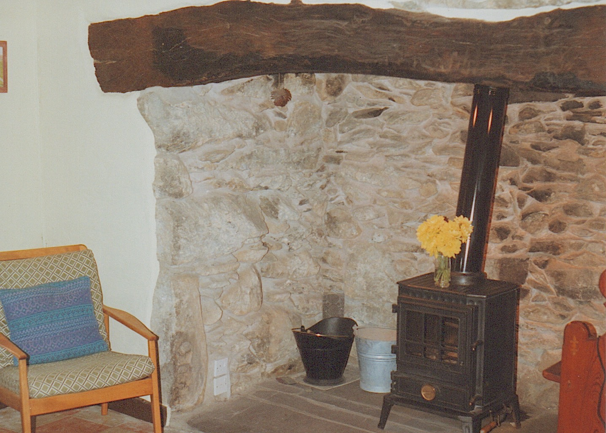

The Search
In the late 1970s we were living in Lymm in Cheshire and, for reasons that I can't quite remember, we decided that it would be good to have a holiday home in North Wales. Certainly we were keen on walking and liked the Snowdonia area. Our preferred area was the Lake District, but we already knew that anything there was outside our price range. So in October 1978 we had a long weekend in Wales, staying at the Gorse Hill caravan site in Conway Valley, with the aim of starting our search.
We soon discovered, however, that even small cottages in popular tourist locations were much more expensive than we could afford. So places such as Betws-y-Coed and Conway were ruled out and after a couple of days we were only left with terraced houses in Blaenau Ffestiniog, surrounded by slate tips!
I think that it was on the day we were due to come home that we ventured into Bangor to look in their estate agents windows. In one agent we saw a single-story terraced cottage, with a red-painted rendered front and a cement-grouted roof in Mountain Road, Llanllechid. Mountain Road sounded interesting and the location looked good, so we arranged to visit the cottage that day.
Llanllechid is about six miles inland from Bangor and we discovered that Mountain Road was at the top of the, very steep, High Street and was, at best, a single track road. As we walked down Mountain Road this first time towards the cottage I thought we had made a big mistake. The terrace of dwellings started with a complete ruin, then a cottage that obviously was not lived in, then another ruin, albeit with a still standing front wall. Then there was the dark red frontage of Hillcrest, number 7. It was only that the owner was standing outside and saw us coming that we carried on. However, when we walked inside it was a different matter. The main room was open up into the roof, which was boarded, with a small room to the right, narrow, steep stairs up to a 'crog loft' and a more modern kitchen and bathroom at the back. Yes, it did have large flowered wallpaper on the uneven walls of the living room and the wallpaper in the kitchen was held up by wooden battens nailed to the wall, but on 10th October 1978 we went back to the agents and made an offer. We were probably mad!
The Cottage
As you can see from the plan, the cottage was quite compact, having a living room, kitchen, bathroom and one bedroom downstairs and a bedroom in the 'crog loft' up a narrow, steep set of stairs. The front door opened on to a single track road (Mountain Road) and the rear wall was the retaining wall of the field behind, which came six feet up the wall. It was clear that getting a building surveyor to look at the cottage would be a waste of time, since the construction was nothing like a twentieth century house. So I employed a local architect, who renovated and adapted old buildings in the area, to lead me through the cottage. He didn't write a report, but gave me verbally his view about the state of the building. The main outcome was that the roof timbers were all sound. We could see that a previous 'modernisation', when a back yard had been roofed over and converted into a kitchen and bathroom, had filled the floors with concrete and so prevented water from moving down the hill, from rear to front. Thus the water-soaked rear wall. It later transpired that the 'builder' had hacked holes in the water-proof rendering on the rear retaining wall so as to key his new, very thick, plaster!
You can get an impression of the inside of the cottage from these two photos. Our hope was that, behind the red bricks and under the fake wood, was an 'inglenook' hearth. My Dad is standing in the doorway to the downstairs bedroom. Both were taken in July 1979 and show the wonderful wallpaper that covered the bumpy walls.
From evidence in another cottage further up the road we assume that the floor was originally clay tiles laid directly on the earth, but with slate-lined channels under them to allow water to to pass from back to front.
So we borrowed £1,700 from the bank and bought number 7 Mountain Road for £4,800. I took a ride over to Llanllechid to look at the state of the cottage before exchanging contracts. When I got there everywhere was covered in snow and I had to leave the car on the A5 and walk up to the village (about 1 kilometre) through knee-deep snow drifts. Then I had to walk up the High Street to Mountain Road. Strictly, Mountain Road was attached to the village of Rachub, but somehow had a postal address for the adjoining hamlet, Llanllechid. The cottage was empty so I couldn't get into it, but I looked through the windows and at the snow-covered roof. All seemed well, so we completed the purchase and took possession on 5th April 1979 (Paul had been born on 30th March).
As you can see, the front door opened on to the road, the other side of which was a stone shed and the garden, the latter running down the hill for quite a way. This photo was taken from near the bottom. You can just make out the shed in front of the cottage. Clearly this photo was taken after we had painted the front of the cottage white. Every year we would spend time cutting down the weeds and grass.
Shortly afterwards I borrowed a van from work and we moved enough furniture in so as to be able to stay there. We put two single beds in the downstairs bedroom and a small double in the crog loft. We also had a sofa in the living room that converted into a double or two single beds. As far as I can recall, all the furniture was acquired from members of the family.
Here are a few photos to put the location in context. The first is a view of Rachub from the south, with Moel Faben behind. Mountain Road is top right of the village. Then we have three views from the cottage, the first looking north-west towards Angelsea, then south-west, both taken from the front of the cottage. Then a view looking south-east, taken from the field behind the cottage. Some of the prints were not well exposed in the first place and have not aged well.
What We Did Next
We then spent the next 15 years renovating the place and spending most of the summer and many weekends there, exploring the local area, the mountains, the castles, the towns, the narrow-gauge railways and the coast. Dates are a little hazy, but the following is a list of things we did to the cottage or things that happened around us:
- Stripped the very thick plaster off the kitchen rear wall and found that the 'builder' had hacked holes in the waterproof rendering on the retaining wall so that the new plaster would key. Consequently water just poured through. So I patched the holes with waterproof cement and painted the wall.
- We stripped the ceiling and one wall of the downstairs bedroom and pointed the stonework. The photo, taken in July 1980, shows a little of the stone wall. I coated it with waterproof solution, but it always 'leaked' a little. Perhaps this was just condensation, since, at least until the summer of 1985, there was just an open ruin the other side of the wall.
- Whilst up on the roof in 1979, coating it with bitumen, I met the owner of the field at the rear of the cottage, which was part of Tanybwlch Farm. I agreed with him to buy a small piece of the field behind the cottage, going back 15 feet, for £120. I only had a hand-written receipt, so when we came to sell the cottage in 1993 it cost a further £600 to legalise the land transfer! The next photo shows Angela and Victoria sitting on the retaining wall, inside the piece of field that we had bought.
- A year later we decided to have the roof stripped off and re-slated. We employed Tony Connell who lived in the High Street. He was trying to establish a building renovation/maintenance business. It cost us £285.50, using reclaimed slates.
- We had wanted to paint the front rendering white since buying the cottage. It must have been about 1980 when we did it and it made a tremendous difference to the appearance of the cottage. You can see the result in photos below.
- We must have felt well-off at that time since we asked the same contractor to excavate the land at the back and put a doorway in the rear wall. The initial estimate was £1,050, but in the end he had to rebuild the rear wall (with a window) and so it cost more. The ruin next door had been bought by a local man who intended rebuilding it himself. He had also bought a piece of the field and so he employed Tony to excavate the rear, but I don't think that happened until later. The photos below show work in progress and the finished project, including the shutters that I made to cover the window when we were away. I built dry-stone retaining walls and a timber fence. Victoria and Paul are trying to interest a horse in some sugar cubes. Paul fancies going hiking!
- A few years later, towards the end of 1983, we had the roof of the rear extension re-felted.
- Fitted new units in the kitchen. As far as I recall, they were cheap flat-pack units from MFI (no longer in business) and I think we retained the sink unit.
- When we had the main roof re-slated we had the small skylight replaced with a larger Velux window. However, the plaster on the sloping ceiling and on the walls in the crog loft was crumbling. So I stripped off all the plaster. The ceiling was lath and plaster, so it was quite difficult to get the old plaster out where it had 'oozed' between the laths. The crog loft was in the roof, so the front and rear walls were only three feet high and then the ceiling sloped up to the apex. Also, the walls of the cottage were two walls of stone, infilled with rubble, with the whole wall tapering towards the top. This meant that when I stripped the plaster from the front and back walls the small stones at the top started to fall out! I used a sand and cement render on the walls and normal gypsum plaster on the ceiling. Both should have been lime plaster, but we didn't know that at the time. I also discovered that getting plaster to stay on laths, particularly on a sloping ceiling, was very difficult. The result was not exactly smooth.
- The living room ceiling was boarded, with a small loft space at the top, accessed via a hatch at the top of the stairs to the crog loft. I had been in there with the architect during our inspection prior to buying the cottage, but not since. So I cleaned out the loft space and put glass-fibre insulation between the joists. It was only a relatively small part of the roof that could be insulated.
- The original front door was a simple wooden frame surrounding an obscured-glass panel, which did not suit the cottage at all. So I replaced it with a stable door. I had measured the width, but for some reason not the height. I just assumed that doors were a standard size. So I bought a stable door in Lymm, fitted the small glass window and painted the door black, then went over to the cottage for a weekend to fit it. However, I discovered that the door was too tall, so I had to remove the bottom rail of the lower section, shorten the side rails and the planks that made up the infill and then refit the bottom rail. I used dowels to hold it in place, rather than the original mortice and tenon. Of course, the paint then needed touching up so as to 'seal' the joints. Luckily it didn't look too bad and lasted for our time at the cottage.
- Now we come to the project that we had wanted to do since we bought the cottage; open up the hearth. In 1985 I built a large frame around the hearth, covered in polythene, so as to keep as much dust out of the living room as possible. Then I removed the fake wood and there was a large beam. I then removed the red bricks and gradually unearthed the inglenook hearth. We found the broken remains of a cast iron range and two levels of slate floor. So I relayed the original slate floor, cleaned the stones and pointed them up (again with cement). With a ladder I could reach into the stack that was built into next door's gable wall. We then had a stove fitted, although that seems to have been in July 1989. The result can be seen in photos in the below.
- Having excavated the hearth we stripped the flowery wallpaper, patched holes in the plaster (it was quite crumbly in several places) and then rendered the walls with a sand and cement mix. Again we should have used lime mortar so as to allow the walls to breath. We then painted the walls with masonry paint and the living room was transformed.
Below we have two views of the front of the cottage after it had been painted white and then some views of the living room, from the front door (and stairs to the crog loft), past the window, to the hearth and round to the doorway into the kitchen.


After moving from Lymm in Cheshire to Bramber in West Sussex we decided, after a few trips, that it was too far to travel. So we sold the cottage in November 1993 for £30,000. We still miss it.